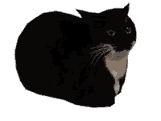

📦 VirtualBox en Archlinux
- Creado
- Lectura
- 3 min · 425 palabras
- Por
- b4zh
- Subject
- Linux, Virtualbox, Archlinux
Contenidos
Importante
Si quieres obtener información y una explicación más detallada, visita la Arch Wiki (opens in a new window) .
Instalar VirtualBox
Los paquetes que debes instalar son:
virtualboxvirtualbox-host-dkms: proporciona módulos al sistema anfitrión.linux-headers: paquete de encabezado para el kernel, para compilar los módulos de VirtualBox.
Por defecto al instalar el paquete virtualbox, también se instala el paquete virtualbox-host-dkms.
sudo pacman -S virtualbox linux-headers
Cargar los módulos del kernel de VirtualBox
Los módulos de VirtualBox se cargan automáticamente al momento del arranque, gracias a systemd-modules-load.service.
Por lo que para cargar los módulos de VirtualBox, reinicia el sistema o cargalos manualmente.
Para cargar un módulo manualmente después de la instalación de VirtualBox, ejecutamos.
sudo modprobe vboxdrv
El módulo vboxdrv se debe cargar obligatoriamente antes de ejecutar cualquier máquina virtual.
Otros módulos:
vboxnetadp: para crear la interfaz del sistema anfitrión.vboxnetflt: para iniciar una máquina virtual usando esa interfaz de red.
También podemos cargar los módulos de VirtualBox manualmente ejecutando vboxreload.
sudo vboxreload
Añadir tu usuario al grupo vboxusers
Para usar todas las funciones de virtualbox con nuestro usuario, debemos añadir nuestro usuario al grupo vboxusers.
sudo usermod -aG vboxusers $USER
Para que los cambios surtan efecto cierra sesión o reinicia el sistema.
Comprueba los cambios ejecutando:
groups && grep vboxusers /etc/group
Extension Pack
El paquete de extensiones es un conjunto de funcionalidades adicionales para Virtualbox, sin embargo no es necesario para el correcto funcionamiento del mismo.
Aun así deberás instalarlo si vas a utilizar las siguientes funcionalidades que proporciona:
-
Integración con Oracle Cloud Infrastructure
-
Controlador de Host USB 2.0 y USB 3.0
-
Cámara Web del Host
-
VirtualBox RDP
-
ROM PXE
-
Cifrado de disco
-
NVMe
Hay un paquete disponible en el AUR llamado virtualbox-ext-oracle, sin embargo yo suelo descargarlo directamente desde el sitio web de
VirtualBox
(opens in a new window)
.
Ya sea dándole en el boton de descarga, o usando wget:
wget [url/de/descarga/vbox-extpack]
Instalar Extension Pack
La instalación se puede hacer a través de la interfaz gráfica o usando VBoxManage.
La instalación del paquete de extensiones requiere acceso root. En la Arch Wiki (opens in a new window) se menciona el uso de herramientas como Polkit (opens in a new window) para otorgar acceso privilegiado a VirtualBox.
Yo instalaré el extensión pack usando sudo
sudo VBoxManage extpack install [/ruta/del/extension/pack.vbox-extpack]
Aceptas los términos y condiciones y listo.
Fin
En principio con esto ya puedes empezar a crear tus máquinas virtuales y darles duro contra el muro, y si no, recuerda que tienes a tu disposición la Arch Wiki (opens in a new window) .
